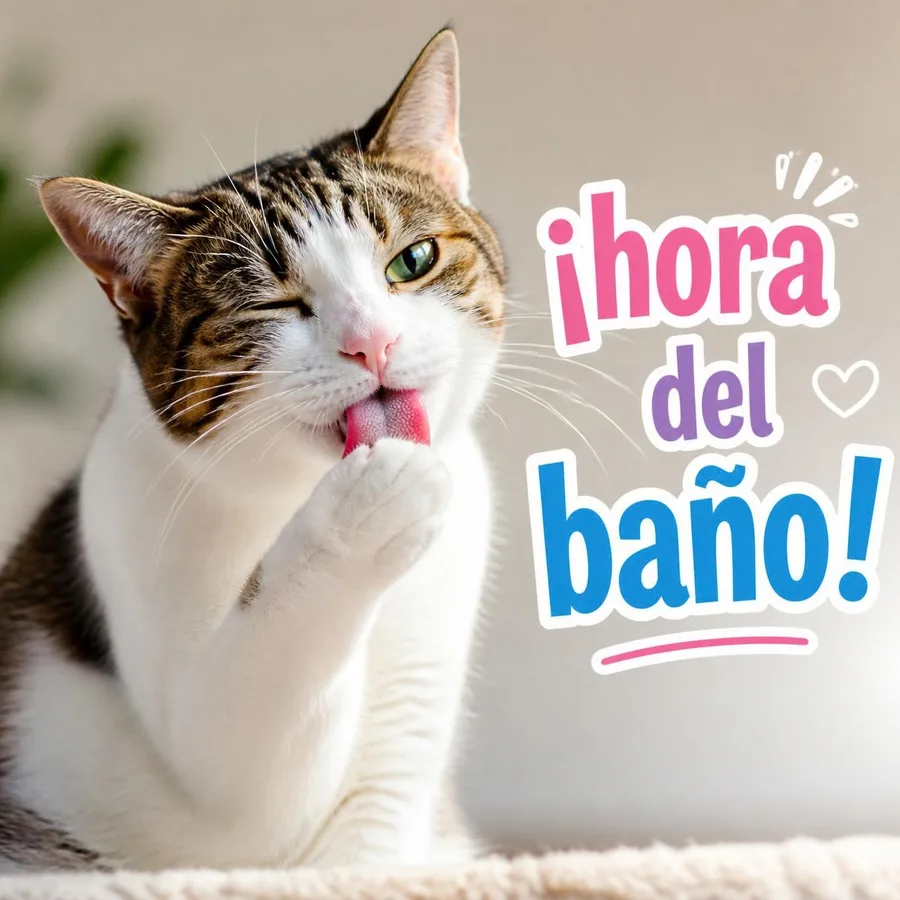

Nosotros
Misión
Nuestra prioridad es el bienestar y la felicidad de tu mascota. Nos dedicamos a prevenir enfermedades, dar diagnósticos claros y curarlas a tiempo, tratándolas siempre con el máximo cariño, respeto y empatía.
Visión
Trabajamos para que los animales vivan más y mejor, usando la mejor tecnología veterinaria. Somos el equipo aliado de las mascotas, combinando ciencia médica avanzada con la educación que las familias necesitan para cuidarlas bien.
Valores que nos guían
- ♥ Amor y paciencia: Tratamos a cada mascota como si fuera nuestra, con suavidad, respeto y entendiendo sus miedos.
- ✔ Honestidad médica: Elegimos siempre lo mejor para la salud del animal, actuando con total transparencia y responsabilidad en sus tratamientos.
- ⚡ Médicos siempre actualizados: Nos capacitamos sin parar para ofrecerle a las mascotas la medicina más avanzada y segura.
- 🐾 Bienestar de por vida: Protegemos la salud de los animales en todas sus etapas, desde que nacen hasta sus años más avanzados.
- 🤝 Unión por los animales: Trabajamos en equipo y con alegría porque sabemos que un ambiente unido se traduce en una mejor atención.
Higiene y cuidados
Cepilla su pelaje con frecuencia y cuida la limpieza de sus dientes y orejas.
- 🐾 Ejercicio diario
- 🐾 Brindarles un espacio cómodo y protegido de temperaturas extremas.

✂️ ¡Turno pelu!Esterilización
Como sociedad, tenemos la responsabilidad de que los animales de compañía tengan una posibilidad real de encontrar un hogar con personas responsables que les brinden una vida digna.
- ♥ Por esta razón, debemos evitar el nacimiento de camadas no deseadas que, lamentablemente, suelen terminar en el abandono o el maltrato.
- ♥ Lleva a tu mascota a esterilizar.
- ♥ No es cruel, es un acto de amor.
- ♥ SALVAR VIDAS no tiene precio.